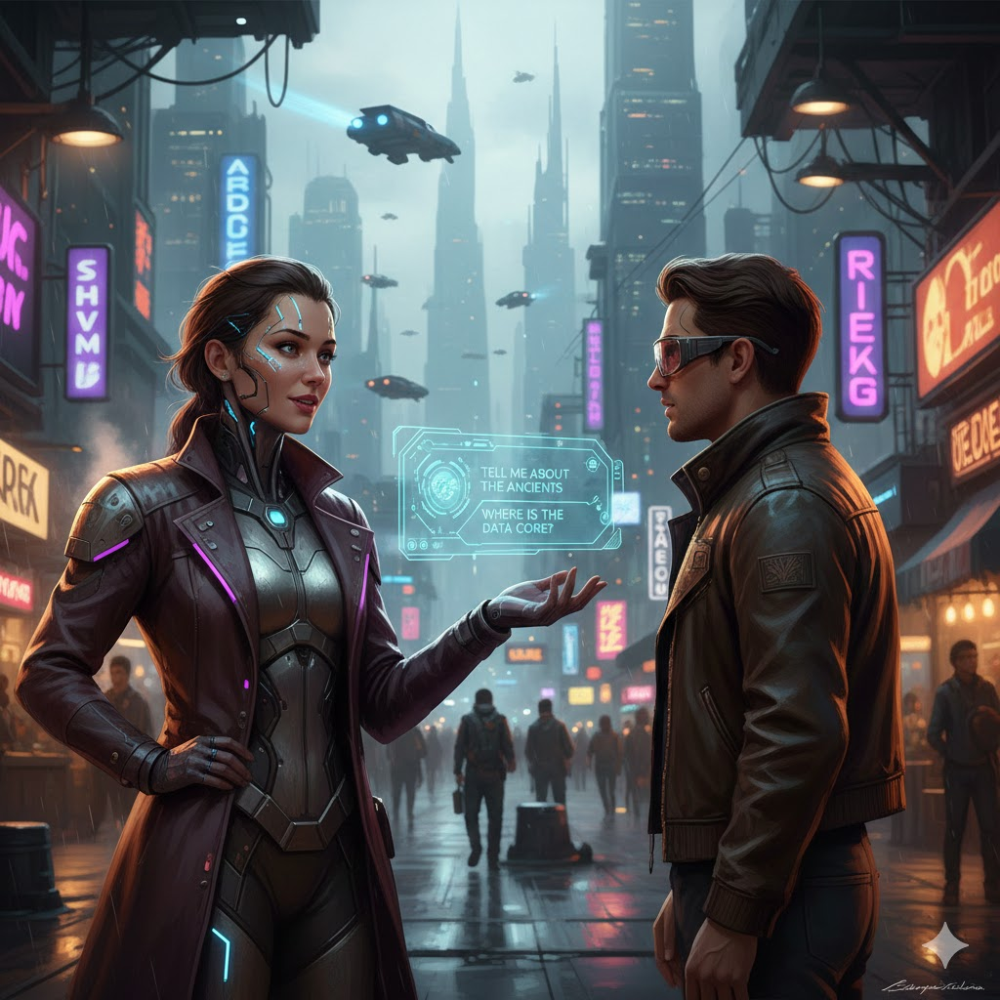
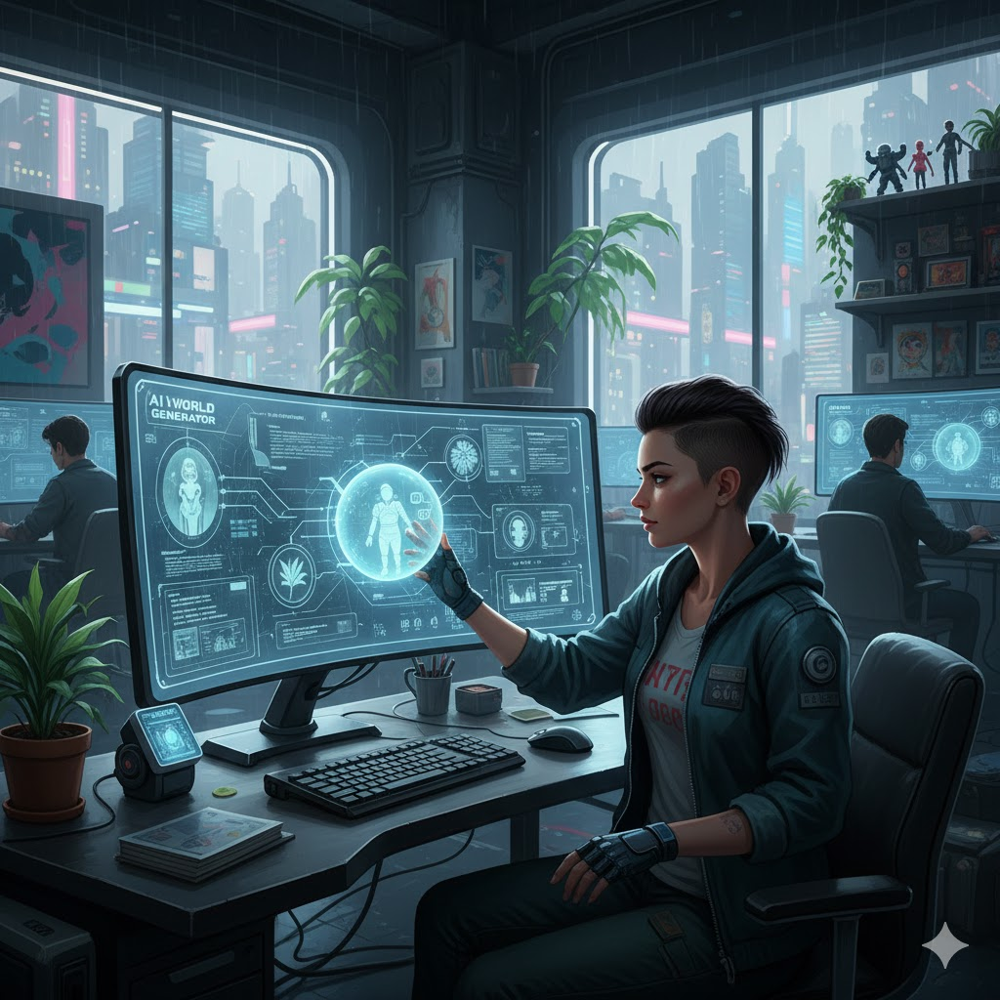
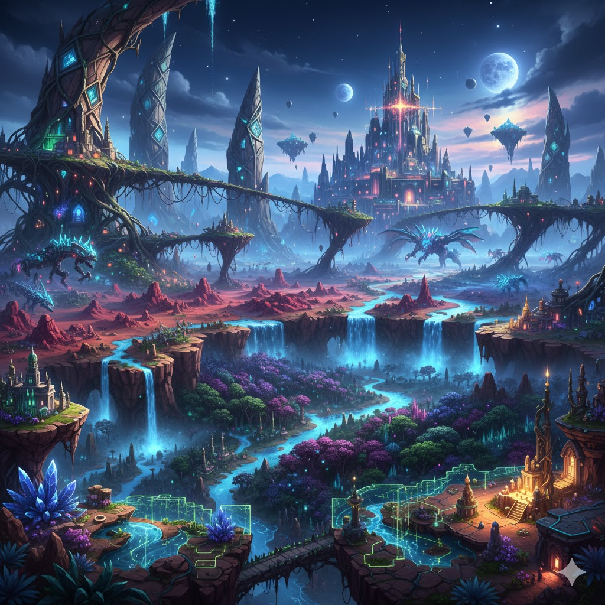

February 1, 2026
For decades, role-playing games have relied on scripted dialogue trees to handle conversations with non-player characters (NPCs). While effective, this approach often leads to repetitive interactions and limits how responsive game worlds can feel. AI-generated NPC dialogue is beginning to change that.
New AI systems allow NPCs to generate responses in real time, adapting to player choices, tone, and past interactions. Instead of selecting from predefined dialogue options, players can interact more naturally, while NPCs respond in ways that feel dynamic and personal.
This shift matters because immersion is one of the most important aspects of RPG design. When characters react believably, the world feels alive rather than scripted. Developers are also experimenting with AI to reduce the time spent writing massive dialogue trees, freeing resources for storytelling and gameplay systems.
My take is that AI-driven dialogue has the potential to redefine RPG experiences, especially in open-world games. The challenge will be maintaining narrative consistency and avoiding unpredictable or immersion-breaking responses. If developers strike the right balance, AI-generated NPCs could become a defining feature of future role-playing games.